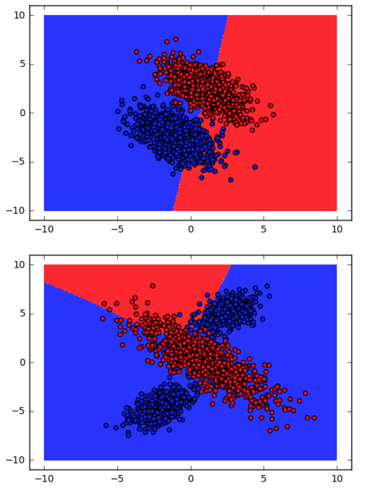
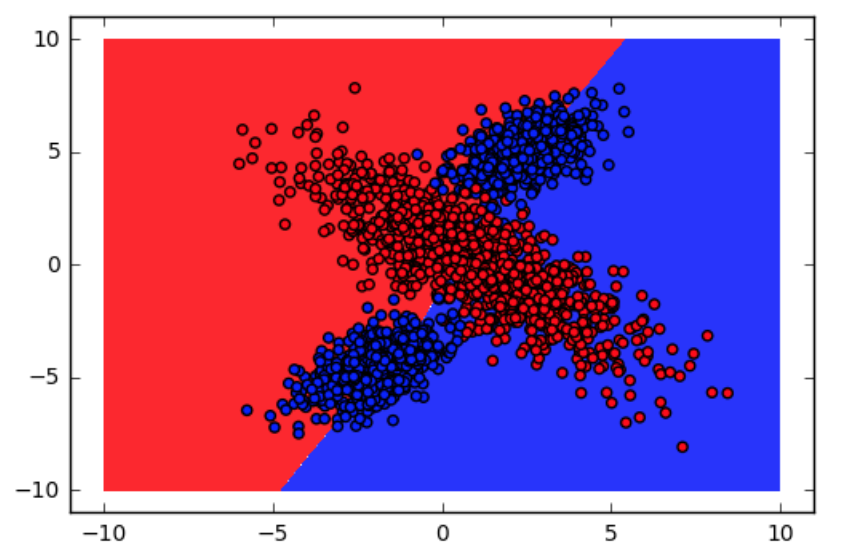
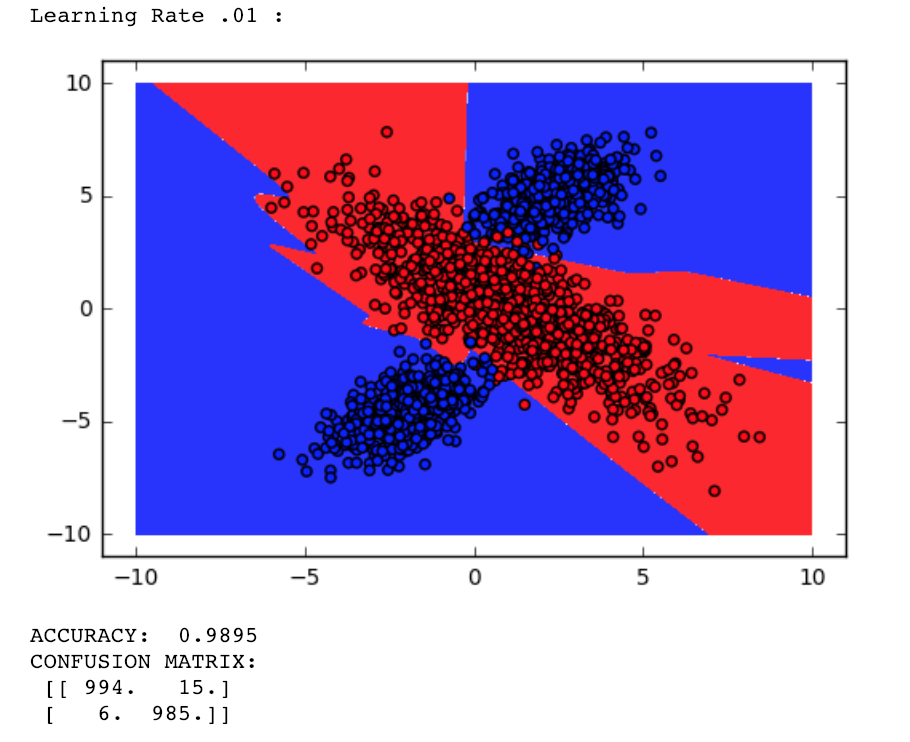

Problem Definition
For this assignment we were given a neural network with an input and output layer. Our job was to add a hidden layer so that the neural network could be trained to generate certain outputs given specific inputs. The hidden layer gives the network the sophistication it needs in order to distinguish trends so that the desired output is displayed during testing. If the correct hidden layer is implemented and the neural network is accurately trained, then the network would have "learned" the meaning of the given input. To complete this problem, we assumed the network is completely untrained at the start and we will use a softmax backpropagation algorithm to train the network. The difficulties I anticipate will be getting the backpropagation to work accurately and efficiently, as well as determining the size of the hidden layer.
Method and Implementation
Since the given neural network with no hidden layers already uses softmax, I decided to continue my neural network using softax. The first step for my algorithm was to actually "make" the hidden layer. To do so I added a second theta matrix, which held the weights, and a second bias matrix, which held the biases. I decided for my backpropagation I would follow what was done in class, as well as what was done in lab.
The only thing left me to do after adding the hidden layer was to implement my predict function and fit function (training). To update the prediction function I just extended the pre-existing function by making it go through my hidden layer and then to the output. To update the fit function I first calculated the outputs, and from there generated my beta to get the theta that updated the output set of weights and biases, as well as to generate my other beta for the hidden layer’s set of weights and biases. I used the delta rule to generate these results.
Experiments
My experiments included testing the linear, non-linear, and digit data sets with different amounts of nodes in the hidden layer, as well as different amount of epoch and training rates. Many of these experiments can be found in the results section as pictures. I completed a total of 20 different tests. Ten included linear vs. non-linear with 2000 epochs and a learning rate of .001, where the training/testing samples were shifted with a round robin. I then did 5 tests with different training rates (.00001,.001,.005,.01,.03). My last 5 tests were done on the digits with 2000 epochs, a learning rate of .001, and a range of hidden nodes (10,16,20,40,60). Describe your experiments, including the number of tests that you performed, and the relevant parameter values.
My metrics for my experiments were how fast my program ran and how accurate my results were once the neural network was fitted.
Results
As you can see from my trials, I was able to train my neural network to almost perfection. Most accuracies resolved to at least 98%. To get to this point I found that 10 nodes for my hidden layer was enough to properly train the network. I also increased the epoch size to 2000 so that it could be trained even further. As a result, I decided to keep the learning rate very low so that the neural network would jump all over the place trying to get to the minimum of the cost function. For both the linear tests and non-linear tests, like I said before, had an accuracy of at least 98% on most tests. For the digits tests, the accuracy hovered closer to 93%, but went up to 94% if more nodes were added to the hidden layer and adding more epochs, such as 60 hidden nodes and 5000 epochs.
Results | ||
| Trial | Source Image | Result Image |
| Round Robin 1 | ||
| Round Robin 2 | ||
| Round Robin 3 | ||
| Round Robin 4 | ||
| Round Robin 5 |  | |
| Learning Rate 1 | ||
| Learning Rate 2 | ||
| Learning Rate 3 | ||
| Learning Rate 4 |  |  |
| Learning Rate 5 | ||
| Digits | ||
Discussion
From my results I determined that I was successful in creating a neural network capable of being trained to produce output with almost 100% accuracy with an input size of two and about 94% accuracy with an input size of 64. I however still was not able to determine the "perfect" settings for my network, such as number of epochs, training rate, and number of hidden nodes. I never actually expected my network to be as accurate as it was for the linear and non-linear tests, but what really surprised me was how accurate the digit tests were. Many much more complex neural networks only achieve a few percentage points higher, and although those last percentage points mean the most, hitting anywhere close to those numbers was very surprising. In the future I would run many more tests and try to reach the absolute minimum of my cost function by varying all the variables.
For question 2, combining the results of the five different round robin tests gave a better idea of how accurate the neural network was. By having five different tests each would have its own accuracy that depended on how well the network was able to train and test on different sets. The final average of the accuracy accounts for different ways of training and testing to give a more rounded answer.
For question 3, having a different learning rate can have a huge effect on the training of your neural network. If the training rate is two high, each epoch could change the network drastically, and even counteracting previous changes. If the training rate is too low, then each epoch has a significantly less of an effect on the training. You need to adjust the training rate up and down to find the "sweet spot" for what nudges the neural network enough that it makes a difference, but not too much that it doesn't get any closer to its goal.
For question 4, overfitting is when a model develops poor predictive performance from having too many parameters apart of the algorithm. Three ways to reduce overfitting include using a wrapper, feature selection, and minimum description length. Using a wrapper is done by enumerating your models according to size and choosing the one with the smallest error. Feature selection is when you simplify your model by discarding irrelevant attributes. Minimum description length is choosing the model that uses the smallest number of bits to encode.
For question 5, L2 regularization minimizes less important attributes of the model so that only important attributes have an effect on the cost, which in turn decreases overfitting. When adding L2 regularization to my network, the cost decreased depending upon the parameters given.
For question 6, my results ended with the tests coming out to around 93-94% accuracy depending upon the parameters. However, when running the network on the training set the accuracy came out to almost 100% every time.
Conclusions
After running all the tests and analyzing the results, I determined it was possible to make a simple neural network that performed very efficiently. I was able to understand how neural networks work and how they are trained, as well as how to train them. I also discovered some insight on what types of parameters are good to change and how I should change them. Overall this was a very successful assignment and I learned a lot from it, as well as it learning a lot from me through my coding of backpropagation.
Credits and Bibliography
https://towardsdatascience.com/l1-and-l2-regularization-methods-ce25e7fc831c March 5th, 2019
https://www.youtube.com/playlist?list=PLZHQObOWTQDNU6R1_67000Dx_ZCJB-3pi March 5th, 2019